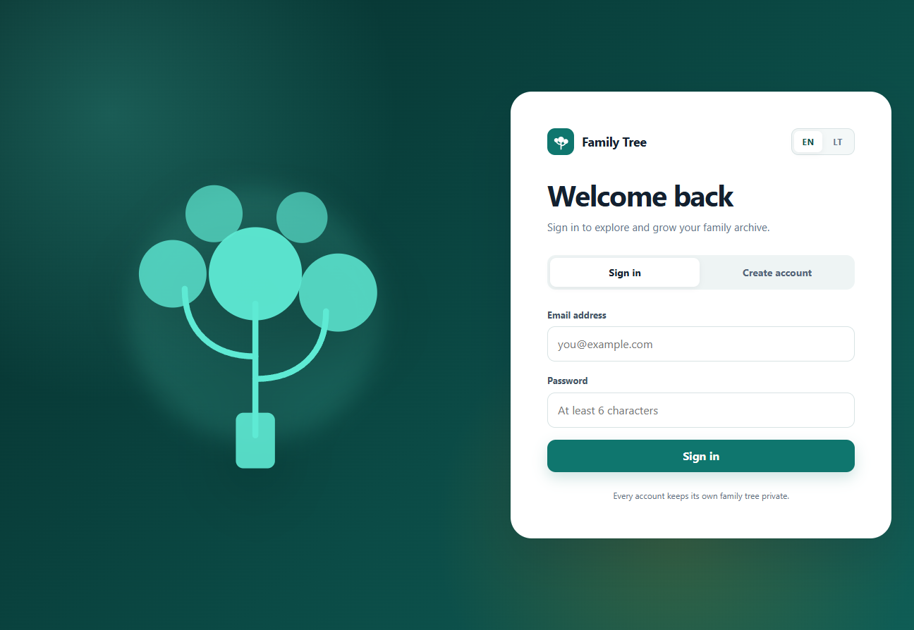
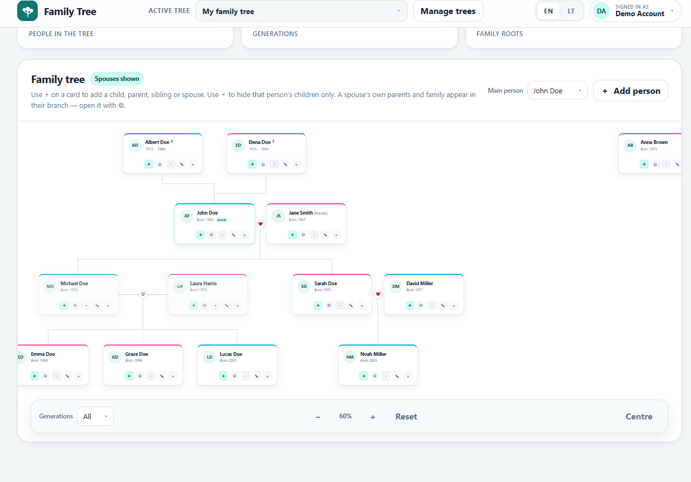
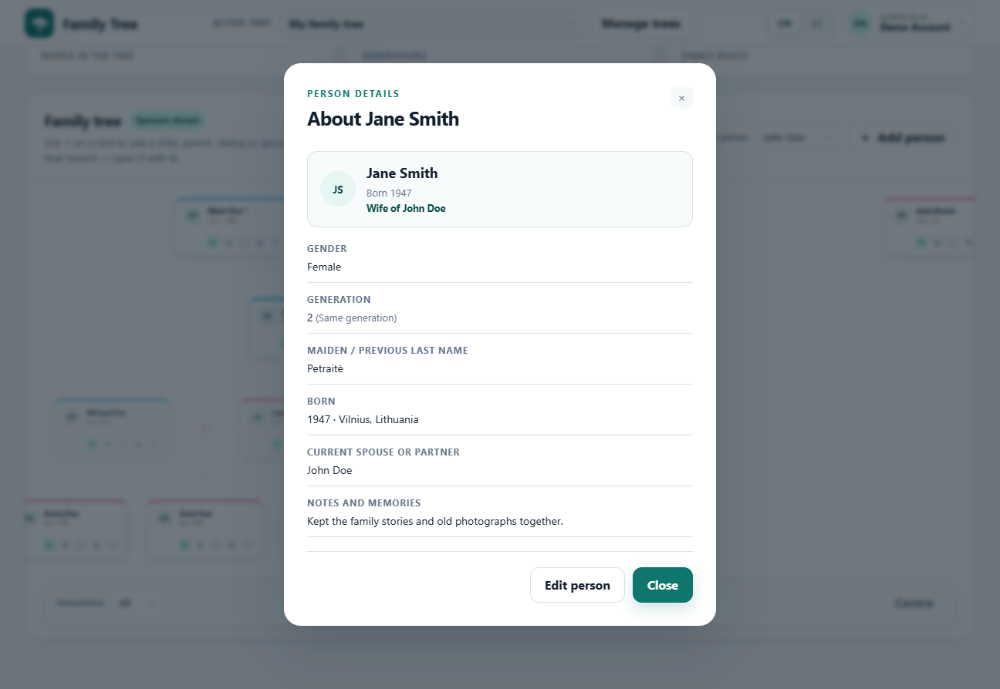
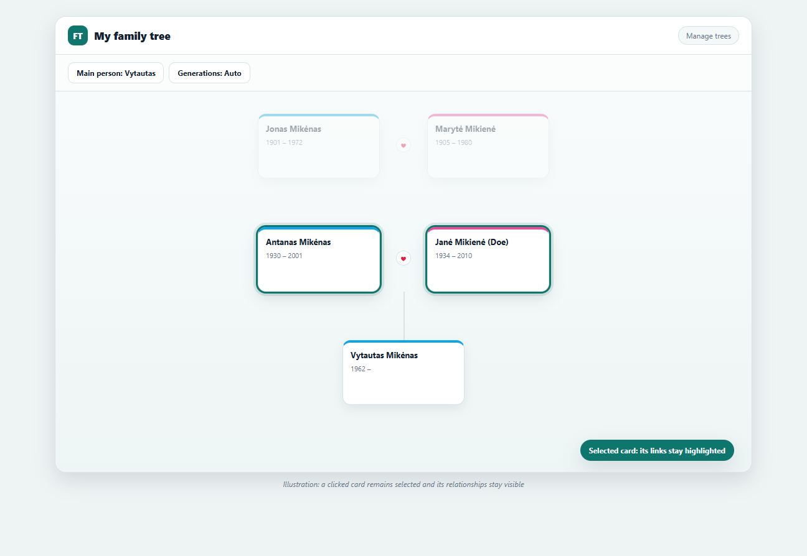
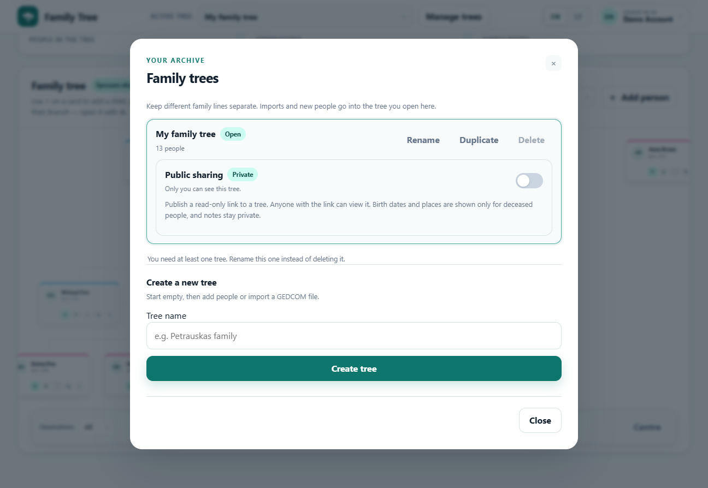
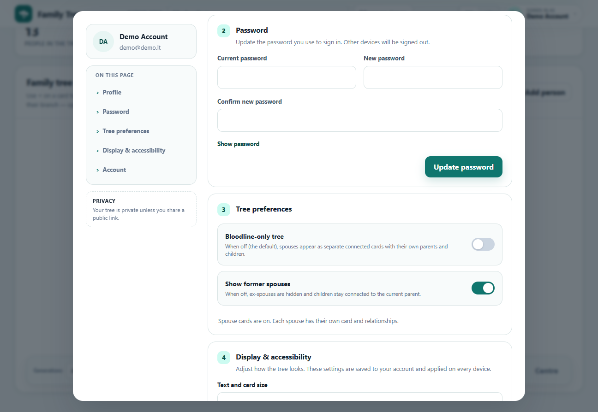
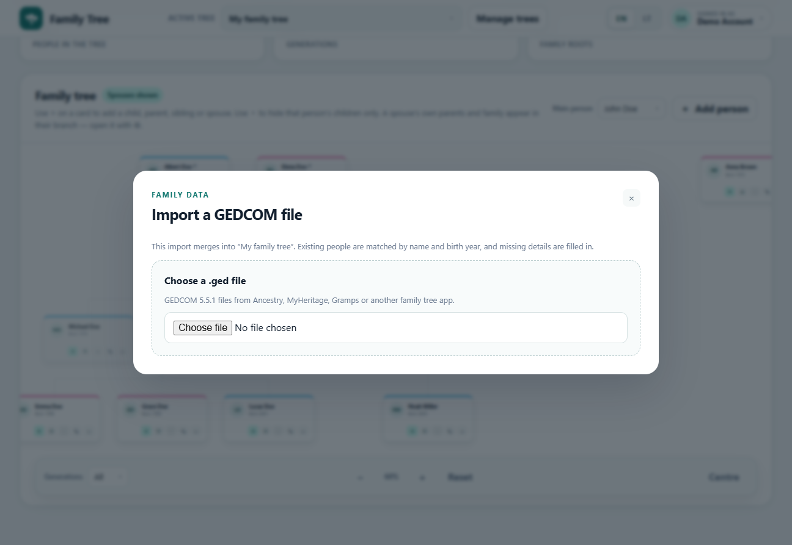

Build your family story, one person at a time
Family Tree is a private place to collect names, dates, stories and connections. This guide walks you through the everyday things you can do in the app.
Open the app at https://moxlas.github.io/family-tree/.
1. Welcome
With Family Tree you can:
- keep one or more family trees;
- add people and record their names, dates, places and notes;
- connect parents, children, spouses and former spouses;
- follow ancestors and descendants on a clear family canvas;
- choose which details are shown and how the tree looks;
- share a read-only link to one tree when you want to;
- bring in family data from a GEDCOM file.
The app speaks English and Lithuanian. You can switch languages at any time.
2. Getting started

3. Your tree at a glance
The canvas shows your family on a clear map. Every person has a card. A heart between two cards means a marriage or partnership. Lines connect parents to their children.
The main person is the person the view is centred on. You can change the main person in the toolbar. Their card carries a small badge.
A previous or maiden surname appears next to the current one, for example Jane Smith (Doe).

4. Adding people
Use + Add person in the toolbar, or the + button on a person's card to add a relative in the right place.
For each person you can record:
- first and last name, and a previous or maiden surname;
- gender;
- birth and death dates and places;
- whether the person is deceased;
- notes and family connections.
Open any card to read the person's details. From there you can edit them, change the main person, or add relatives.
If you need to remove someone, use the × action on their card. You can choose to remove only that person and keep their children in the tree, or remove the person together with everyone below them. Choose carefully — deletion cannot be undone.

5. Family connections
You can connect people as parents, children and partners:
- a person can have two parents;
- a person can have more than one spouse or partner;
- current relationships show a solid heart;
- former relationships — divorced, widowed or separated — show a broken heart and a dashed line.
When you add children to a couple, the app links them to both partners. If a relationship ends, you can keep it as a former relationship so the family history stays complete.
6. Exploring the tree
The toolbar gives you several ways to look at the same family:
- Main person: choose who sits at the centre of the view.
- Focus: show only one person's branch — their ancestors, descendants and close relatives.
- Collapse children: use the arrow on a card to hide or show that person's children.
- Bloodline only: hide spouse cards and follow just the direct family line.
- Former spouses: choose whether former partners are shown in the settings.
- Generations: show a fixed number of generations or let the canvas decide automatically.
- Zoom: zoom in or out. Your choice is remembered in this browser.
7. Selecting a card
Click a card to select it. The card stays selected until you click another one, so its relationships keep glowing even after you move the mouse away. This makes it much easier to follow a line in a large tree.
Pointing at another card temporarily highlights that card instead; when you move away, the selected card's highlight returns.
Press Esc to clear the selection.

8. Managing trees
Open Manage trees from the top bar. This is your family archive. From there you can:
- create a new tree;
- open another tree;
- rename a tree;
- duplicate a tree;
- delete a tree.
Duplicate makes a separate copy of the selected tree. It copies all people, families, relationships and the main person. The original stays unchanged. The copy is named with “(copy)” at the end, starts private, and opens straight away.
You always need to keep at least one tree. If you only have one, rename it instead of deleting it.

10. Your account and comfort
Click your name or initials in the top bar to open the account menu. It has three options:
- Profile and settings opens your account window.
- User guide opens this guide in a new tab, in the language you are using.
- Log out signs you out.
In Your account, use the list on the left to jump to each part of the window:
- Profile — change the name and email used to sign in.
- Password — enter your current password, then type and confirm a new one and choose Update password. Other devices will be signed out; this one stays signed in.
- Tree preferences — choose how spouse cards and family lines appear.
- Display & accessibility — adjust text size, contrast and animation.
- Account — see when you joined and how private trees stay private.
These preferences are saved to your account, so they follow you when you sign in on another device. Use the language switcher in the top bar to change between English and Lietuvių.

11. GEDCOM files
If you already have family data in a GEDCOM file, you can bring it into the tree that is currently open.
- Import: choose a
.gedfile and the app adds the people and connections to your tree. - Import merges with your tree. It fills in missing details and matches people with the same name and birth year. It does not replace what you already have.
- Export: download the selected tree as a GEDCOM file whenever you want a copy.

12. Step-by-step examples
13. Common questions
Where do I find sharing?
Open Manage trees. Sharing is controlled separately for each tree.
Why are some details missing from a shared link?
Living people's private details are deliberately hidden, notes are never shared, and relationship dates and places need at least one deceased partner to be shown.
My shared link stopped working. Why?
Sharing may have been turned off, or a new link may have been created. Open Manage trees to check and copy the current link.
Can I remove the last tree?
No. At least one tree must remain. Rename it instead if you want to start fresh.
How do I change my password?
Open Profile and settings from the account menu, go to Password, enter your current password and a new one, then choose Update password.
Where can I open this guide again?
Open the account menu in the top bar and choose User guide. It opens in a new tab in the language you are using.
Is zoom saved to my account?
No. Zoom is remembered in the current browser, separately for private trees and shared links. Display and accessibility settings are saved to your account.
The app looks old. What should I do?
Refresh the page with Ctrl+F5 on Windows or Cmd+Shift+R on Mac.